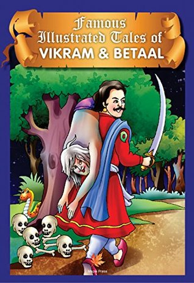

|
Volatility
Volatility is the man's worst characteristic
Vikram pulled Vaitaal from the tree, put him on his shoulder and continued his
journey again. Vaitaal said - "Vikram, You don't feel bored, that is why I tell
you another story, listen--
In Ujjain city lived a Braahman. His name was Vaasudev Sharmaa. He was
very religious. He had a son, his name was Gunaakar. Gunaakar had very bad
habits. He lost his father's all wealth in gambling, so his father expelled him
from the house. He refused to accept him as his son too.
Gunaakar started wandering around. Once he came to a cremation ground. He
was very hungry. He saw a Yogee there who was sitting beside a burning pyre.
He asked some food from him. Yogee pitied him, so immediately he took the
human skull and offered him food in that. Gunaakar could not eat food from
that skull, so he said - "I cannot eat food from this human skull." Then Yogee
read a Mantra and a beautiful woman appeared before him. Yogee asked her
to take him and give some food. She took Gunaakar in a beautiful house and
offered him nice food. Gunaakar got attracted to her so they enjoyed each
other's company. After that, that woman disappeared.
Gunaakar came to Yogee and said "Mahaaraj, She has gone away." Yogee said
- "Yes, She had to go, she was only a Maayaa (illusion)." Gunaaker held his
feet and requested him to teach that knowledge. Yogee said - "You have to do
Saadhanaa for this." "I am ready for this, tell me what do I have to do."
Yogee told him the Mantra and the method of Saadhanaa. But that woman
didn't come even after a week of Saadhanaa. Sad Gunaakar again came to the
Yogee and told him that she didn't come. Yogee said - "You might have made
some mistake in Saadhanaa." "No, I followed your instructions exactly as you
gave them to me." "OK, Then do it in front of the pyre."
Gunaakar did it in front of a pyre also, still she didn't come. Gunaakar again
went to the Yogee and reported that she didn't come. Yogee kicked him away
and said - "Oh, What a foolish disciple I have got." Gunaakar didn't go from
there and continued to request Yogee, but the Yogee was not paying any
attention to him.
At the same time another young man came there and became his disciple.
Yogee told him the same thing what he told to Gunaakar. Gunaakar was very
surprised to see that his Saadhanaa got complete and that woman had
appeared before him. Gunaakar started crying, then Yogee threatened him
with Shaap and asked him to leave. Gunaakar got very disappointed so he
committed suicide by jumping in a well.
After saying this Vaitaal got silent, after a while he said - "Vikram, Now tell
"is that Yogee not criminal because of whom Gunaakar had to commit suicide?
Why didn't Gunaakar get that woman?"
Vikram said - "Vaitaal, Yogee was not at fault in this, because another man
got that woman by the same method. Gunaakar himself was at fault." "How."
"Listen, Volatility is the worst characteristic of a man. No man can ever be
successful with this characteristic. This was the reason that Gunaakar could
not be successful." Vaitaal asked - "What kind of volatility he had?" Vikram
said - "He was all the time thinking about the enjoyment with that woman,
that is why his Saadhanaa could not get complete. One has to concentrate to
succeed anywhere. This was the reason of his failure."
Vaitaal laughed heartily hearing Vikram and said - "You are right, Vikram." He
jumped away from his shoulder, ran away and hung from the same tree, but
Vikram had held him tightly. He could not free himself. Vikram said - "I will
not let you run away this time." "I will also not run away this time. Listen to
another story." and Vaitaal again started his story--
|

|